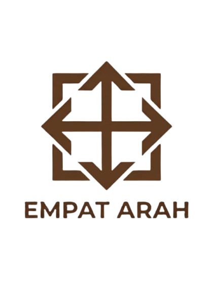

Empat Arah berangkat dari satu gagasan sederhana: setiap perjalanan punya banyak jalan, tetapi semuanya berawal dari satu titik pusat. Empat anak panah pada logo menunjuk ke atas, bawah, kiri, dan kanan, melambangkan empat penjuru mata angin dan keberanian untuk bergerak ke segala arah.
Di tengahnya, garis-garis itu bertemu membentuk tanda silang. Titik temu ini adalah rumah bagi ide, tempat kami berkumpul sebelum melangkah keluar. Bingkai persegi di sekelilingnya melambangkan fondasi yang kokoh dan stabil, sedangkan celah di setiap sudutnya menandakan ruang yang selalu terbuka untuk hal baru.
Warna cokelatnya mewakili tanah dan kayu: hangat, membumi, dan dapat dipercaya. Kami percaya karya yang baik tumbuh dari akar yang kuat, lalu berkembang ke segala arah.
Kelompok 7 - INFORMATIKA XE oleh ALESSANDRA PUTRI ARDIAN